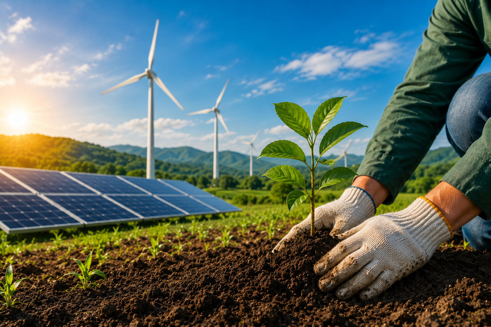

A sustentabilidade busca equilibrar crescimento econômico, preservação ambiental e qualidade de vida. Para isso, diversas práticas podem ser adotadas no campo.
Utiliza tecnologias para reduzir desperdícios e aumentar a produtividade.
Permite utilizar a água de forma mais eficiente e consciente.
Resíduos podem ser reutilizados, reduzindo impactos ambientais.
Ajuda a recuperar áreas degradadas e preservar a biodiversidade.